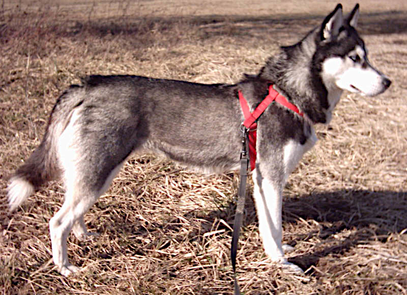
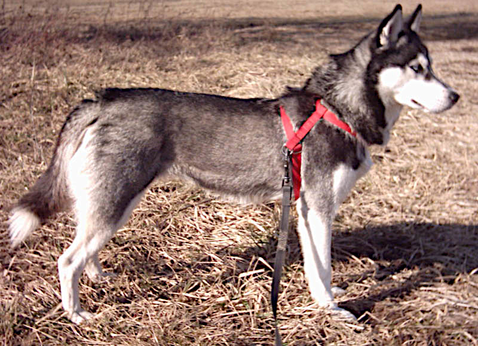

ჰასკის აღწერა
ჰასკი ცივი კლიმატის ძაღლია, წარმოშობით ციმბირიდან. ისინი ცნობილია თავიანთი ლამაზი ცისფერი თვალებითა და ენერგიული ხასიათით. ჰასკი ძალიან მეგობრულია, თუმცა საჭიროებს ბევრ ფიზიკურ აქტივობას.
ჰასკი ცივი კლიმატის ძაღლია, წარმოშობით ციმბირიდან. ისინი ცნობილია თავიანთი ლამაზი ცისფერი თვალებითა და ენერგიული ხასიათით. ჰასკი ძალიან მეგობრულია, თუმცა საჭიროებს ბევრ ფიზიკურ აქტივობას.
